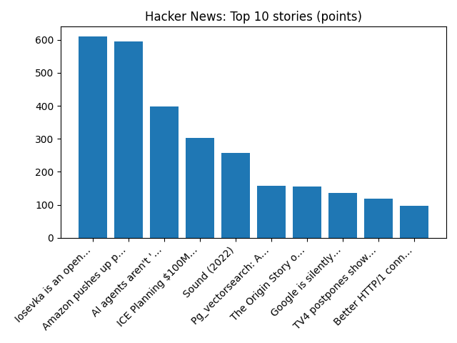

YOUR DAILY INTELLIGENCE BRIEF · 2026-10-14
The world, in focus.
🌍 Global coverage
🌌 Beyond Earth

Mars and the Beehive Under an Aurora
📜 On this day
- 2025 A coup d'état successfully overthrows Malagasy president Andry Rajoelina.
- 2023 Australians vote to reject a constitutional amendment that would have established an Indigenous Voice to Parliament.
- 2021 About 10,000 American employees of John Deere go on strike.
- 2017 An Al-Shabaab suicide bomber detonated a massive truck bomb at the Zobe junction in Somalia's capital, Mogadishu, killing 587 people, injuring 316 others, and leaving more than 500 missing.
📈 Topic activity
Source health: 24/24 healthy
View original detailed report
Daily Knowledge Garden — 2026-10-14
🧭 Daily Summary
Global coverage includes Burnham - Rosebank and Jackdaw oil and gas decisions coming 'shortly'; US inflation heats up in September; Fed rate hike this month back on table - Reuters; Associated Press News: Breaking News | Latest News Today - AP News. Local coverage includes Northern Virginia, Maryland meetings set for proposed Valley North power line - WJLA; Fairfax County police sound the alarm about unsafe driving - NBC4 Washington.
🌍 Global News (cross-source)
- Burnham - Rosebank and Jackdaw oil and gas decisions coming 'shortly' — BBC — Science
- US inflation heats up in September; Fed rate hike this month back on table - Reuters — Reuters — Headlines (Google News)
- Associated Press News: Breaking News | Latest News Today - AP News — AP — Business (Google News)
- Driving test waits fall to two-year low - but still average 20 weeks — BBC — Business
- World prays for Pope Leo after lung cancer diagnosis - Reuters — Reuters — World (Google News)
🏙️ Local News
- Northern Virginia, Maryland meetings set for proposed Valley North power line - WJLA — Google News — Northern Virginia
- Fairfax County police sound the alarm about unsafe driving - NBC4 Washington — Google News — Northern Virginia
- Popular Maryland Restaurant Expanding to Northern Virginia - The MoCo Show - — Google News — Northern Virginia
- Powering the AI Decade 2026 | Data Centers & Energy Policy Forum | Tysons, VA | Free - InsideNoVa.com — Google News — Northern Virginia
- Home remodeling firm moves HQ to Vienna, replacing longstanding beauty spa - FFXnow — Google News — Northern Virginia
🚀 Hacker News (Top 5)
- Gemini 4 Argon — 926 points, 713 comments
- 11 year old unsoundness bugs found in Rust borrow checker — 657 points, 366 comments
- Apple HomeView — 638 points, 761 comments
- Firefox Enterprise — 619 points, 256 comments
- Redesigning source control at Anthropic — 485 points, 485 comments

🌍 Wikipedia — On This Day (selected)
- 2025 — A coup d'état successfully overthrows Malagasy president Andry Rajoelina.
- 2023 — Australians vote to reject a constitutional amendment that would have established an Indigenous Voice to Parliament.
- 2021 — About 10,000 American employees of John Deere go on strike.
- 2017 — An Al-Shabaab suicide bomber detonated a massive truck bomb at the Zobe junction in Somalia's capital, Mogadishu, killing 587 people, injuring 316 others, and leaving more than 500 missing.
- 2015 — A suicide bomb attack in Tonsa, Pakistan kills at least seven people and injures 13 others.
🎲 Wikipedia — Random Article
George (bishop of Veszprém)
George (Hungarian: György) was a Hungarian prelate in the 11th century, who served as Bishop of Veszprém around 1061.
https://en.wikipedia.org/wiki/George_(bishop_of_Veszpr%C3%A9m)
🌌 NASA APOD
Mars and the Beehive Under an Aurora
Feed Health
- Reuters — Headlines (Google News): ok (15 articles)
- Reuters — World (Google News): ok (15 articles)
- Reuters — Business (Google News): ok (15 articles)
- BBC — World: ok (15 articles)
- BBC — Tech: ok (15 articles)
- BBC — Business: ok (15 articles)
- BBC — Science: ok (15 articles)
- AP — Headlines (Google News): ok (15 articles)
- AP — Politics (Google News): ok (15 articles)
- AP — Business (Google News): ok (15 articles)
- NPR — Top Stories: ok (10 articles)
- NPR — Politics: ok (10 articles)
- NPR — Business: ok (10 articles)
- NPR — Science: ok (10 articles)
- NPR — Technology: ok (10 articles)
- ScienceNews: ok (15 articles)
- ScienceDaily — Top: ok (15 articles)
- Nature — Technology: ok (15 articles)
- Google News — Northern Virginia: ok (15 articles)
- Google News — Northern Virginia traffic: ok (15 articles)
- Google News — Northern Virginia weather: ok (15 articles)
- Wikipedia — On This Day: ok (10 articles)
- Wikipedia — Random: ok (1 articles)
- NASA — APOD: ok (1 articles)
Runs so far today: 4